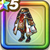

くさなぎの戦袴
攻略班 8.5点 / 守備減耐性+10%攻撃減耐性+10%守備減耐性+10%攻撃減耐性+10%【晴れ】ジバリア属性斬撃・体技ダメージ+3%【バトマス】スキルの斬撃ダメージ+2%ジバリア属性斬撃・体技ダメージ+6%
くわしい特徴
【レベル別習得スキル】 Lv1守備減耐性+10% Lv5守備力+5 Lv8攻撃減耐性+10% Lv10【晴れ】ジバリア属性斬撃・体技ダメージ+3% Lv12【バトマス】スキルの斬撃ダメージ+2% Lv15【バトマス】さいだいMP+5 Lv18ジバリア属性斬撃・体技ダメージ+6% Lv20守備減耐性+10% Lv23きようさ+5 Lv25攻撃減耐性+10% 【限界突破スキル】 1凸攻撃力+7 2凸すばやさ+10 3凸守備力+5 4凸さいだいHP+10